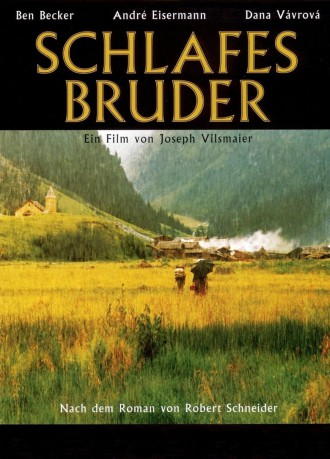
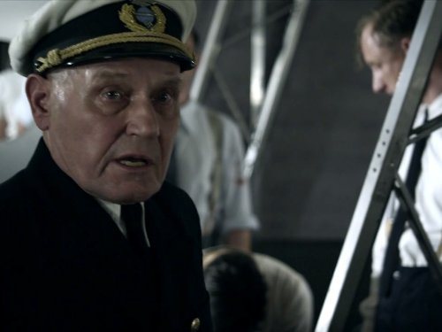

#8699 Schlafes Bruder
 
 IMDB-Wertung: 7.1 / 10
IMDB-Wertung: 7.1 / 10  Metascore: 0
Metascore: 0 
Ende des 18. Jahrhunderts In die Verlassenheit und Tristesse des abgelegenen Alpendorfs Eschberg wird ein Kind hineingeboren. Johannes Elias Alder ein Bastard, von den Eltern abgelehnt und von der inzestuösen Dorfgemeinde, allesamt dickköpfig und engstirnig, verachtet. Elias, das Kind mit den eigenartigen gelben Augen, wächst als Außenseiter auf und so bleibt seine göttliche Begabung, sein absolutes Gehör, unentdeckt. Er bringt sich selbst das Orgelspiel bei und vermag dem Instrument beinah überirdische Töne zu entlocken, die jeden Zuhörer bis ins Mark erschüttern. Als seine Fähigkeiten schließlich entdeckt werden, ist es bereits zu spät - Elias zerbricht am Verlust seines besten Freundes Peter, der ihn abgöttisch liebt, und der unerwiderten Liebe zu Elsbeth. Er beschließt, nicht mehr zu schlafen, bis der Tod Erlösung bringt...
Jahr: 1995
Dauer: 132 Minuten
FSK: 12
Land: Deutschland Studio: Senator FilmTonspuren:
Untertitel:
Auflösung: 1080p (1920x800) Größe: 8140 MB
Genre: Drama, Musik, Liebe
Regisseur: Joseph Vilsmaier
Drehbuch: Motorô Mase
Soundtrack: Enjott Schneider, Hubert von Goisern
Darsteller:
- André Eisermann als Elias
- Dana Vávrová als Elsbeth
 Ben Becker als Peter
Ben Becker als Peter Jochen Nickel als Köhler Michel
Jochen Nickel als Köhler Michel-  Jürgen Schornagel als Kurat Benzer / Curate Benzer
 Paulus Manker als Oskar
Paulus Manker als Oskar Peter Franke als Seff
Peter Franke als Seff Detlef Bothe als Lukas
Detlef Bothe als Lukas Michael Mendl als Nulf
Michael Mendl als Nulf Eva Mattes als Nulfin
Eva Mattes als Nulfin- Heinz Emigholz als Haintz
- Regina Fritsch als Hebamme / Midwife
 Herbert Knaup als Cantor Goller / Choirmaster Goller
Herbert Knaup als Cantor Goller / Choirmaster Goller Gilbert von Sohlern als Albert
Gilbert von Sohlern als Albert- Bolek Polívka als Marktmann / Marketender
- Borivoj Navrátil als Generalvikar / Supervising Curate
- Lubomír Kostelka als 1. Professor
- Radek Holub als Türsteher / Doorman
- Jan Preucil als 2. Feldberg Bürger / Feldberg Citizen #2
- Michaela Rosen als Seffin
- Angelika Bartsch als Burga
 Lena Stolze als Oskarin
Lena Stolze als Oskarin- Martin Heesch als Paul
- Birge Schade als Franziska
- Nadine Neumann als Magdalena
 Ingo Naujoks als Feldwaibl Hirsch / Sergeant Hirsch
Ingo Naujoks als Feldwaibl Hirsch / Sergeant Hirsch- Alfred Weißenbach als 1. Greis / Old Man #1
- Josef Hendrichs als 2. Greis / Old Man #2
- Conradin Blum als Elias - Kind / Elias, as child
- Michaela Pfeiffer als Philipp
- Robert Studer als Fritz - Kind / Fritz, as child
- Florian Wostry als Lukas - Kind / Lukas, as child
- Peter Füchsl als Paul - Kind / Paul, as child
- Ralph Sauerwein als Albert, as child
- Natalie Winkel als Franziska - Kind / Franziska, as child
- Benrhard Witwer als 1. Junge / Boy #1
- Kristof Nimitz als 2. Junge / Boy #2
- Christoph Thaler als 3. Junge / Boy #3
- Theresa Longoni als Mädchen / Girl
- Janina als Anna, 9 Jahre / Anna, age 9
- Josefina Hellsten als Anna, 2 Jahre / Anna, age 2
- Sabine Mayr als Kinderquartett / Children's Quartet
- Katharina Fae als Kinderquartett / Children's Quartet
- Matthias Honeck als Kinderquartett / Children's Quartet
- Simon Frick als Kinderquartett / Children's Quartet
- Robert Schneider als Kutscher / Coachman
- Samuel König als Elias - Säugling
- Tatjana Glamocanin als Elsbeth - Säugling / Elsbeth, as child
- Georg Hackl als Totengräber / Metzger / Grave-Digger / Butcher
- Petro Domenigg als 1. Eschberger / Eschberg Man #1
Datei: X:\1995\Schlafes Bruder (1995, FSK12, 1920x800).mkv seit 25.04.2018
Festplatte: HD 1992-1995
 Es gibt insgesamt 85 Filme in der Gruppe '1995'
Es gibt insgesamt 85 Filme in der Gruppe '1995'